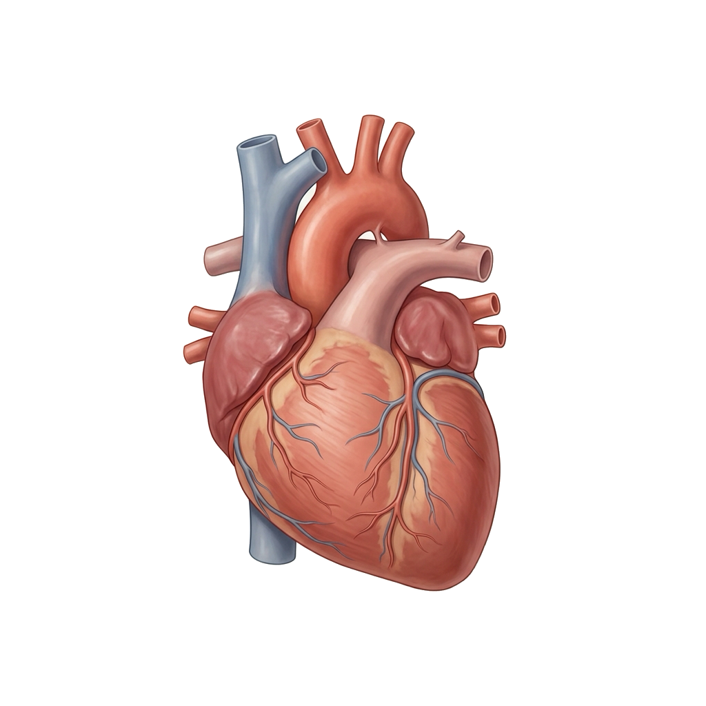

Metabolic Monitoring
Patient telemetry overview
Continuous monitoring of cardiovascular and metabolic indicators collected from connected IoT sensors for metabolic syndrome care.

Heart Rate
HR-01
72
bpm
Normal
Blood Glucose
GLU-02
142
mg/dL
Above target
Blood Pressure
BP-03
120/80
mmHg
Normal
Patient
Live vitals
5 connected sensors
Heart Rate
HR-01
72
bpm
Range 60–100
Blood Glucose
GLU-02
142
mg/dL
Target <100
Blood Pressure
BP-03
120 / 80
mmHg
Target <130/80
Body Temperature
TMP-04
36.6
°C
Range 36.1–37.2
ECG Status
ECG-05
Sinus
rhythm
Lead II · Validated
Clinical alerts
1 activeElevated blood glucose
142 mg/dL exceeds the configured threshold of 100 mg/dL.
| Parameter | Current | Normal range | Alert threshold | Status |
|---|---|---|---|---|
| Heart rate HR-01 · Optical | 72 bpm | 60–100 bpm | < 60 or > 100 bpm | Normal |
| Blood glucose GLU-02 · Biosensor | 142 mg/dL | 70–99 mg/dL | ≥ 100 mg/dL | Above target |
| Blood pressure BP-03 · Cuff | 120/80 mmHg | < 130/80 mmHg | ≥ 130/80 mmHg | Normal |
| Body temperature TMP-04 · Thermistor | 36.6 °C | 36.1–37.2 °C | < 36.0 or > 37.5 °C | Normal |
| ECG status ECG-05 · Lead II | Sinus rhythm | Normal Sinus Rhythm | Arrhythmia / ST shift | Stable |
Readings and thresholds calibrated according to clinical practice guidelines for metabolic syndrome management. Fictional patient data for academic coursework.